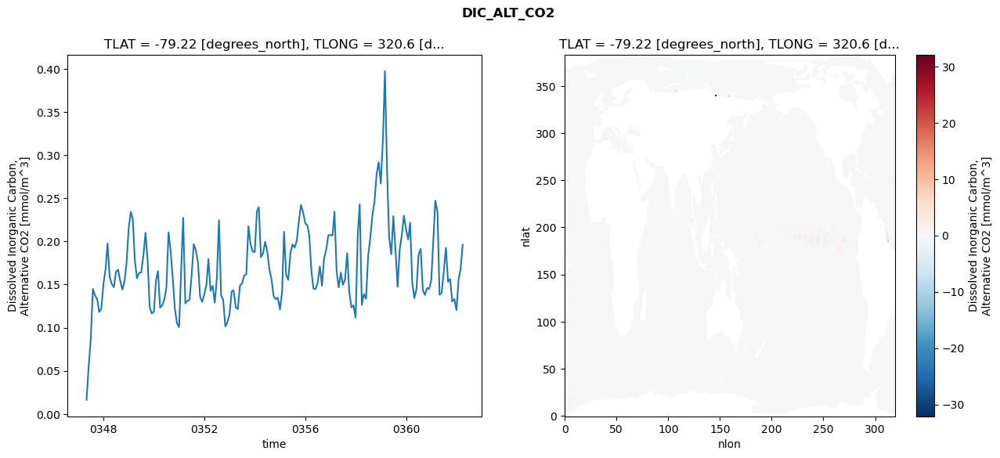
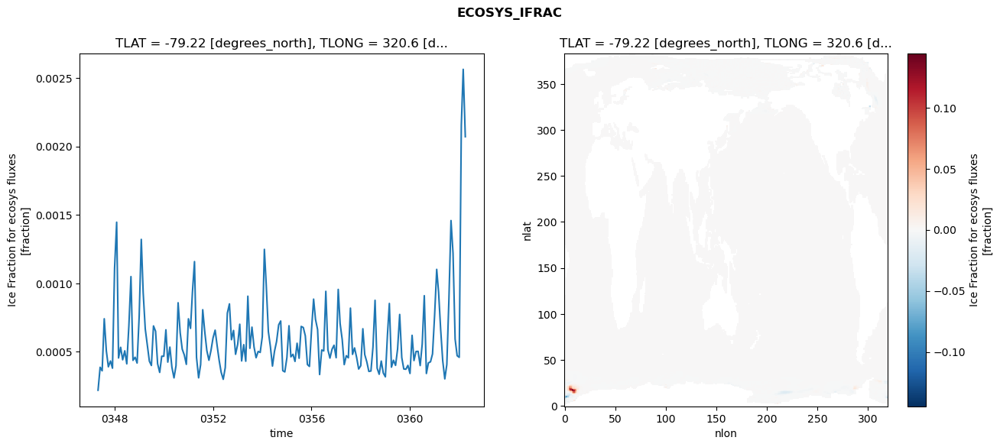
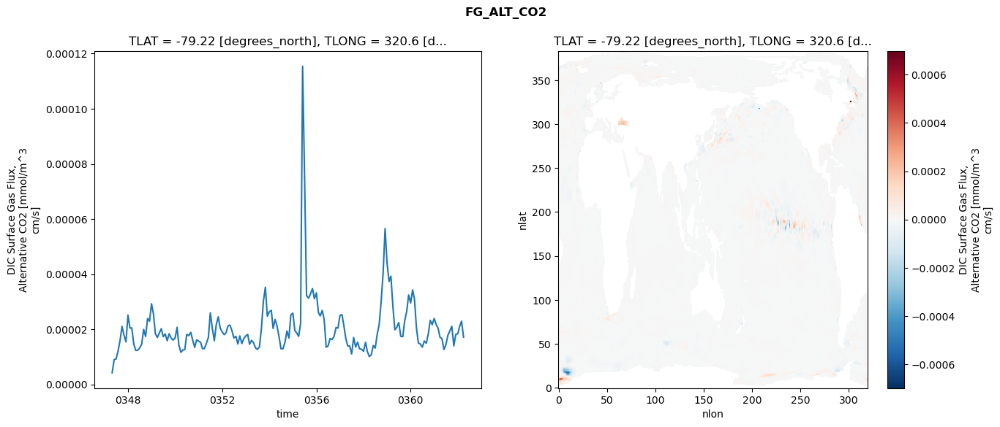
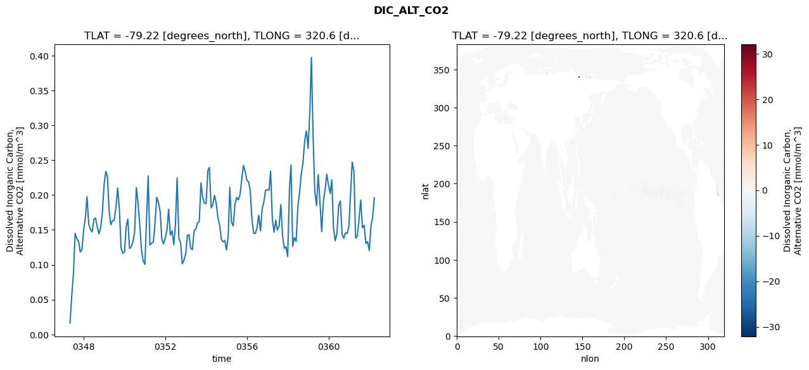
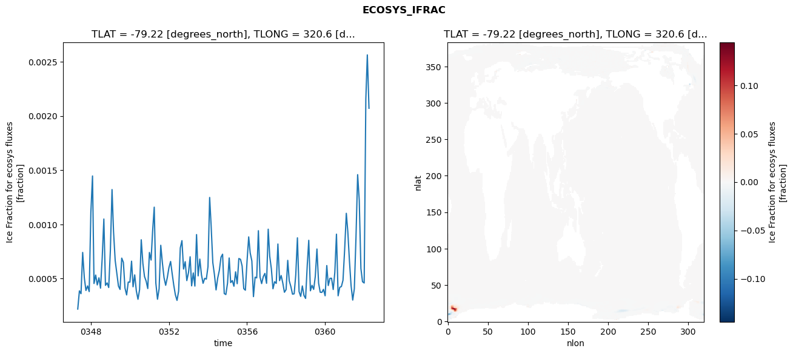
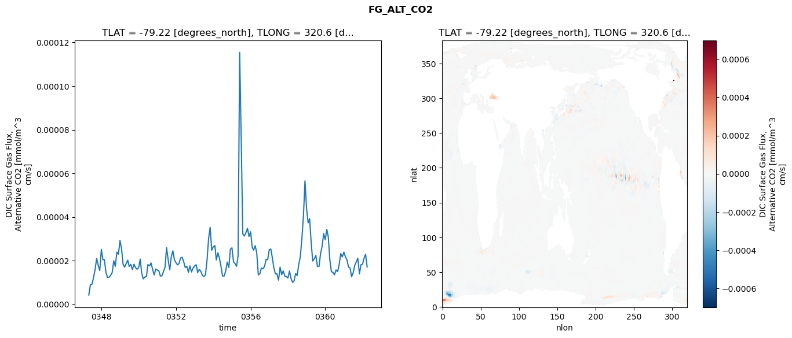

glb-dor_North_Atlantic_basin_016_1999-04-01_00065#
Simulation details#
Case: smyle.cdr-atlas-v0.glb-dor_North_Atlantic_basin_016_1999-04-01_00065.001
Basin: North_Atlantic_basin
Polygon: 16.0
Start date: 1999-04
Show code cell source Hide code cell source
import xarray as xr
import matplotlib.pyplot as plt
Show code cell source Hide code cell source
zarr_store = "/path/to/zarr/store"
# Parameters
zarr_store = "/global/cfs/projectdirs/m4746/Projects/Ocean-CDR-Atlas-v0/data/validation/smyle.cdr-atlas-v0.glb-dor_North_Atlantic_basin_016_1999-04-01_00065.001.validation.zarr"
Show code cell source Hide code cell source
%%time
ds_o = xr.open_zarr(zarr_store).compute()
ds_o
CPU times: user 638 ms, sys: 464 ms, total: 1.1 s
Wall time: 1.41 s
<xarray.Dataset> Size: 2MB
Dimensions: (nlat: 384, nlon: 320, time: 180)
Coordinates:
TLAT float64 8B -79.22
TLONG float64 8B 320.6
ULAT float64 8B -78.95
ULONG float64 8B 321.1
* time (time) object 1kB 0347-05-01 00:00:00 ... 0362-04-01 0...
z_t float32 4B 500.0
Dimensions without coordinates: nlat, nlon
Data variables:
ALK_ALT_CO2_diff (nlat, nlon) float32 492kB nan nan nan ... nan nan nan
ALK_ALT_CO2_rmse (time) float64 1kB 0.01188 0.04224 ... 0.1385 0.1925
DIC_ALT_CO2_diff (nlat, nlon) float32 492kB nan nan nan ... nan nan nan
DIC_ALT_CO2_rmse (time) float64 1kB 0.01641 0.05526 ... 0.1676 0.1961
ECOSYS_IFRAC_diff (nlat, nlon) float32 492kB nan nan nan ... nan nan nan
ECOSYS_IFRAC_rmse (time) float64 1kB 0.0002197 0.0003874 ... 0.002071
FG_ALT_CO2_diff (nlat, nlon) float32 492kB nan nan nan ... nan nan nan
FG_ALT_CO2_rmse (time) float64 1kB 4.199e-06 9e-06 ... 2.292e-05 1.71e-05xarray.Dataset
- nlat: 384
- nlon: 320
- time: 180
- TLAT()float64-79.22
- long_name :
- array of t-grid latitudes
- units :
- degrees_north
array(-79.22052261)
- TLONG()float64320.6
- long_name :
- array of t-grid longitudes
- units :
- degrees_east
array(320.56250892)
- ULAT()float64-78.95
- long_name :
- array of u-grid latitudes
- units :
- degrees_north
array(-78.95289509)
- ULONG()float64321.1
- long_name :
- array of u-grid longitudes
- units :
- degrees_east
array(321.12500894)
- time(time)object0347-05-01 00:00:00 ... 0362-04-...
- bounds :
- time_bound
- long_name :
- time
array([cftime.DatetimeNoLeap(347, 5, 1, 0, 0, 0, 0, has_year_zero=True), cftime.DatetimeNoLeap(347, 6, 1, 0, 0, 0, 0, has_year_zero=True), cftime.DatetimeNoLeap(347, 7, 1, 0, 0, 0, 0, has_year_zero=True), cftime.DatetimeNoLeap(347, 8, 1, 0, 0, 0, 0, has_year_zero=True), cftime.DatetimeNoLeap(347, 9, 1, 0, 0, 0, 0, has_year_zero=True), cftime.DatetimeNoLeap(347, 10, 1, 0, 0, 0, 0, has_year_zero=True), cftime.DatetimeNoLeap(347, 11, 1, 0, 0, 0, 0, has_year_zero=True), cftime.DatetimeNoLeap(347, 12, 1, 0, 0, 0, 0, has_year_zero=True), cftime.DatetimeNoLeap(348, 1, 1, 0, 0, 0, 0, has_year_zero=True), cftime.DatetimeNoLeap(348, 2, 1, 0, 0, 0, 0, has_year_zero=True), cftime.DatetimeNoLeap(348, 3, 1, 0, 0, 0, 0, has_year_zero=True), cftime.DatetimeNoLeap(348, 4, 1, 0, 0, 0, 0, has_year_zero=True), cftime.DatetimeNoLeap(348, 5, 1, 0, 0, 0, 0, has_year_zero=True), cftime.DatetimeNoLeap(348, 6, 1, 0, 0, 0, 0, has_year_zero=True), cftime.DatetimeNoLeap(348, 7, 1, 0, 0, 0, 0, has_year_zero=True), cftime.DatetimeNoLeap(348, 8, 1, 0, 0, 0, 0, has_year_zero=True), cftime.DatetimeNoLeap(348, 9, 1, 0, 0, 0, 0, has_year_zero=True), cftime.DatetimeNoLeap(348, 10, 1, 0, 0, 0, 0, has_year_zero=True), cftime.DatetimeNoLeap(348, 11, 1, 0, 0, 0, 0, has_year_zero=True), cftime.DatetimeNoLeap(348, 12, 1, 0, 0, 0, 0, has_year_zero=True), cftime.DatetimeNoLeap(349, 1, 1, 0, 0, 0, 0, has_year_zero=True), cftime.DatetimeNoLeap(349, 2, 1, 0, 0, 0, 0, has_year_zero=True), cftime.DatetimeNoLeap(349, 3, 1, 0, 0, 0, 0, has_year_zero=True), cftime.DatetimeNoLeap(349, 4, 1, 0, 0, 0, 0, has_year_zero=True), cftime.DatetimeNoLeap(349, 5, 1, 0, 0, 0, 0, has_year_zero=True), cftime.DatetimeNoLeap(349, 6, 1, 0, 0, 0, 0, has_year_zero=True), cftime.DatetimeNoLeap(349, 7, 1, 0, 0, 0, 0, has_year_zero=True), cftime.DatetimeNoLeap(349, 8, 1, 0, 0, 0, 0, has_year_zero=True), cftime.DatetimeNoLeap(349, 9, 1, 0, 0, 0, 0, has_year_zero=True), cftime.DatetimeNoLeap(349, 10, 1, 0, 0, 0, 0, has_year_zero=True), cftime.DatetimeNoLeap(349, 11, 1, 0, 0, 0, 0, has_year_zero=True), cftime.DatetimeNoLeap(349, 12, 1, 0, 0, 0, 0, has_year_zero=True), cftime.DatetimeNoLeap(350, 1, 1, 0, 0, 0, 0, has_year_zero=True), cftime.DatetimeNoLeap(350, 2, 1, 0, 0, 0, 0, has_year_zero=True), cftime.DatetimeNoLeap(350, 3, 1, 0, 0, 0, 0, has_year_zero=True), cftime.DatetimeNoLeap(350, 4, 1, 0, 0, 0, 0, has_year_zero=True), cftime.DatetimeNoLeap(350, 5, 1, 0, 0, 0, 0, has_year_zero=True), cftime.DatetimeNoLeap(350, 6, 1, 0, 0, 0, 0, has_year_zero=True), cftime.DatetimeNoLeap(350, 7, 1, 0, 0, 0, 0, has_year_zero=True), cftime.DatetimeNoLeap(350, 8, 1, 0, 0, 0, 0, has_year_zero=True), cftime.DatetimeNoLeap(350, 9, 1, 0, 0, 0, 0, has_year_zero=True), cftime.DatetimeNoLeap(350, 10, 1, 0, 0, 0, 0, has_year_zero=True), cftime.DatetimeNoLeap(350, 11, 1, 0, 0, 0, 0, has_year_zero=True), cftime.DatetimeNoLeap(350, 12, 1, 0, 0, 0, 0, has_year_zero=True), cftime.DatetimeNoLeap(351, 1, 1, 0, 0, 0, 0, has_year_zero=True), cftime.DatetimeNoLeap(351, 2, 1, 0, 0, 0, 0, has_year_zero=True), cftime.DatetimeNoLeap(351, 3, 1, 0, 0, 0, 0, has_year_zero=True), cftime.DatetimeNoLeap(351, 4, 1, 0, 0, 0, 0, has_year_zero=True), cftime.DatetimeNoLeap(351, 5, 1, 0, 0, 0, 0, has_year_zero=True), cftime.DatetimeNoLeap(351, 6, 1, 0, 0, 0, 0, has_year_zero=True), cftime.DatetimeNoLeap(351, 7, 1, 0, 0, 0, 0, has_year_zero=True), cftime.DatetimeNoLeap(351, 8, 1, 0, 0, 0, 0, has_year_zero=True), cftime.DatetimeNoLeap(351, 9, 1, 0, 0, 0, 0, has_year_zero=True), cftime.DatetimeNoLeap(351, 10, 1, 0, 0, 0, 0, has_year_zero=True), cftime.DatetimeNoLeap(351, 11, 1, 0, 0, 0, 0, has_year_zero=True), cftime.DatetimeNoLeap(351, 12, 1, 0, 0, 0, 0, has_year_zero=True), cftime.DatetimeNoLeap(352, 1, 1, 0, 0, 0, 0, has_year_zero=True), cftime.DatetimeNoLeap(352, 2, 1, 0, 0, 0, 0, has_year_zero=True), cftime.DatetimeNoLeap(352, 3, 1, 0, 0, 0, 0, has_year_zero=True), cftime.DatetimeNoLeap(352, 4, 1, 0, 0, 0, 0, has_year_zero=True), cftime.DatetimeNoLeap(352, 5, 1, 0, 0, 0, 0, has_year_zero=True), cftime.DatetimeNoLeap(352, 6, 1, 0, 0, 0, 0, has_year_zero=True), cftime.DatetimeNoLeap(352, 7, 1, 0, 0, 0, 0, has_year_zero=True), cftime.DatetimeNoLeap(352, 8, 1, 0, 0, 0, 0, has_year_zero=True), cftime.DatetimeNoLeap(352, 9, 1, 0, 0, 0, 0, has_year_zero=True), cftime.DatetimeNoLeap(352, 10, 1, 0, 0, 0, 0, has_year_zero=True), cftime.DatetimeNoLeap(352, 11, 1, 0, 0, 0, 0, has_year_zero=True), cftime.DatetimeNoLeap(352, 12, 1, 0, 0, 0, 0, has_year_zero=True), cftime.DatetimeNoLeap(353, 1, 1, 0, 0, 0, 0, has_year_zero=True), cftime.DatetimeNoLeap(353, 2, 1, 0, 0, 0, 0, has_year_zero=True), cftime.DatetimeNoLeap(353, 3, 1, 0, 0, 0, 0, has_year_zero=True), cftime.DatetimeNoLeap(353, 4, 1, 0, 0, 0, 0, has_year_zero=True), cftime.DatetimeNoLeap(353, 5, 1, 0, 0, 0, 0, has_year_zero=True), cftime.DatetimeNoLeap(353, 6, 1, 0, 0, 0, 0, has_year_zero=True), cftime.DatetimeNoLeap(353, 7, 1, 0, 0, 0, 0, has_year_zero=True), cftime.DatetimeNoLeap(353, 8, 1, 0, 0, 0, 0, has_year_zero=True), cftime.DatetimeNoLeap(353, 9, 1, 0, 0, 0, 0, has_year_zero=True), cftime.DatetimeNoLeap(353, 10, 1, 0, 0, 0, 0, has_year_zero=True), cftime.DatetimeNoLeap(353, 11, 1, 0, 0, 0, 0, has_year_zero=True), cftime.DatetimeNoLeap(353, 12, 1, 0, 0, 0, 0, has_year_zero=True), cftime.DatetimeNoLeap(354, 1, 1, 0, 0, 0, 0, has_year_zero=True), cftime.DatetimeNoLeap(354, 2, 1, 0, 0, 0, 0, has_year_zero=True), cftime.DatetimeNoLeap(354, 3, 1, 0, 0, 0, 0, has_year_zero=True), cftime.DatetimeNoLeap(354, 4, 1, 0, 0, 0, 0, has_year_zero=True), cftime.DatetimeNoLeap(354, 5, 1, 0, 0, 0, 0, has_year_zero=True), cftime.DatetimeNoLeap(354, 6, 1, 0, 0, 0, 0, has_year_zero=True), cftime.DatetimeNoLeap(354, 7, 1, 0, 0, 0, 0, has_year_zero=True), cftime.DatetimeNoLeap(354, 8, 1, 0, 0, 0, 0, has_year_zero=True), cftime.DatetimeNoLeap(354, 9, 1, 0, 0, 0, 0, has_year_zero=True), cftime.DatetimeNoLeap(354, 10, 1, 0, 0, 0, 0, has_year_zero=True), cftime.DatetimeNoLeap(354, 11, 1, 0, 0, 0, 0, has_year_zero=True), cftime.DatetimeNoLeap(354, 12, 1, 0, 0, 0, 0, has_year_zero=True), cftime.DatetimeNoLeap(355, 1, 1, 0, 0, 0, 0, has_year_zero=True), cftime.DatetimeNoLeap(355, 2, 1, 0, 0, 0, 0, has_year_zero=True), cftime.DatetimeNoLeap(355, 3, 1, 0, 0, 0, 0, has_year_zero=True), cftime.DatetimeNoLeap(355, 4, 1, 0, 0, 0, 0, has_year_zero=True), cftime.DatetimeNoLeap(355, 5, 1, 0, 0, 0, 0, has_year_zero=True), cftime.DatetimeNoLeap(355, 6, 1, 0, 0, 0, 0, has_year_zero=True), cftime.DatetimeNoLeap(355, 7, 1, 0, 0, 0, 0, has_year_zero=True), cftime.DatetimeNoLeap(355, 8, 1, 0, 0, 0, 0, has_year_zero=True), cftime.DatetimeNoLeap(355, 9, 1, 0, 0, 0, 0, has_year_zero=True), cftime.DatetimeNoLeap(355, 10, 1, 0, 0, 0, 0, has_year_zero=True), cftime.DatetimeNoLeap(355, 11, 1, 0, 0, 0, 0, has_year_zero=True), cftime.DatetimeNoLeap(355, 12, 1, 0, 0, 0, 0, has_year_zero=True), cftime.DatetimeNoLeap(356, 1, 1, 0, 0, 0, 0, has_year_zero=True), cftime.DatetimeNoLeap(356, 2, 1, 0, 0, 0, 0, has_year_zero=True), cftime.DatetimeNoLeap(356, 3, 1, 0, 0, 0, 0, has_year_zero=True), cftime.DatetimeNoLeap(356, 4, 1, 0, 0, 0, 0, has_year_zero=True), cftime.DatetimeNoLeap(356, 5, 1, 0, 0, 0, 0, has_year_zero=True), cftime.DatetimeNoLeap(356, 6, 1, 0, 0, 0, 0, has_year_zero=True), cftime.DatetimeNoLeap(356, 7, 1, 0, 0, 0, 0, has_year_zero=True), cftime.DatetimeNoLeap(356, 8, 1, 0, 0, 0, 0, has_year_zero=True), cftime.DatetimeNoLeap(356, 9, 1, 0, 0, 0, 0, has_year_zero=True), cftime.DatetimeNoLeap(356, 10, 1, 0, 0, 0, 0, has_year_zero=True), cftime.DatetimeNoLeap(356, 11, 1, 0, 0, 0, 0, has_year_zero=True), cftime.DatetimeNoLeap(356, 12, 1, 0, 0, 0, 0, has_year_zero=True), cftime.DatetimeNoLeap(357, 1, 1, 0, 0, 0, 0, has_year_zero=True), cftime.DatetimeNoLeap(357, 2, 1, 0, 0, 0, 0, has_year_zero=True), cftime.DatetimeNoLeap(357, 3, 1, 0, 0, 0, 0, has_year_zero=True), cftime.DatetimeNoLeap(357, 4, 1, 0, 0, 0, 0, has_year_zero=True), cftime.DatetimeNoLeap(357, 5, 1, 0, 0, 0, 0, has_year_zero=True), cftime.DatetimeNoLeap(357, 6, 1, 0, 0, 0, 0, has_year_zero=True), cftime.DatetimeNoLeap(357, 7, 1, 0, 0, 0, 0, has_year_zero=True), cftime.DatetimeNoLeap(357, 8, 1, 0, 0, 0, 0, has_year_zero=True), cftime.DatetimeNoLeap(357, 9, 1, 0, 0, 0, 0, has_year_zero=True), cftime.DatetimeNoLeap(357, 10, 1, 0, 0, 0, 0, has_year_zero=True), cftime.DatetimeNoLeap(357, 11, 1, 0, 0, 0, 0, has_year_zero=True), cftime.DatetimeNoLeap(357, 12, 1, 0, 0, 0, 0, has_year_zero=True), cftime.DatetimeNoLeap(358, 1, 1, 0, 0, 0, 0, has_year_zero=True), cftime.DatetimeNoLeap(358, 2, 1, 0, 0, 0, 0, has_year_zero=True), cftime.DatetimeNoLeap(358, 3, 1, 0, 0, 0, 0, has_year_zero=True), cftime.DatetimeNoLeap(358, 4, 1, 0, 0, 0, 0, has_year_zero=True), cftime.DatetimeNoLeap(358, 5, 1, 0, 0, 0, 0, has_year_zero=True), cftime.DatetimeNoLeap(358, 6, 1, 0, 0, 0, 0, has_year_zero=True), cftime.DatetimeNoLeap(358, 7, 1, 0, 0, 0, 0, has_year_zero=True), cftime.DatetimeNoLeap(358, 8, 1, 0, 0, 0, 0, has_year_zero=True), cftime.DatetimeNoLeap(358, 9, 1, 0, 0, 0, 0, has_year_zero=True), cftime.DatetimeNoLeap(358, 10, 1, 0, 0, 0, 0, has_year_zero=True), cftime.DatetimeNoLeap(358, 11, 1, 0, 0, 0, 0, has_year_zero=True), cftime.DatetimeNoLeap(358, 12, 1, 0, 0, 0, 0, has_year_zero=True), cftime.DatetimeNoLeap(359, 1, 1, 0, 0, 0, 0, has_year_zero=True), cftime.DatetimeNoLeap(359, 2, 1, 0, 0, 0, 0, has_year_zero=True), cftime.DatetimeNoLeap(359, 3, 1, 0, 0, 0, 0, has_year_zero=True), cftime.DatetimeNoLeap(359, 4, 1, 0, 0, 0, 0, has_year_zero=True), cftime.DatetimeNoLeap(359, 5, 1, 0, 0, 0, 0, has_year_zero=True), cftime.DatetimeNoLeap(359, 6, 1, 0, 0, 0, 0, has_year_zero=True), cftime.DatetimeNoLeap(359, 7, 1, 0, 0, 0, 0, has_year_zero=True), cftime.DatetimeNoLeap(359, 8, 1, 0, 0, 0, 0, has_year_zero=True), cftime.DatetimeNoLeap(359, 9, 1, 0, 0, 0, 0, has_year_zero=True), cftime.DatetimeNoLeap(359, 10, 1, 0, 0, 0, 0, has_year_zero=True), cftime.DatetimeNoLeap(359, 11, 1, 0, 0, 0, 0, has_year_zero=True), cftime.DatetimeNoLeap(359, 12, 1, 0, 0, 0, 0, has_year_zero=True), cftime.DatetimeNoLeap(360, 1, 1, 0, 0, 0, 0, has_year_zero=True), cftime.DatetimeNoLeap(360, 2, 1, 0, 0, 0, 0, has_year_zero=True), cftime.DatetimeNoLeap(360, 3, 1, 0, 0, 0, 0, has_year_zero=True), cftime.DatetimeNoLeap(360, 4, 1, 0, 0, 0, 0, has_year_zero=True), cftime.DatetimeNoLeap(360, 5, 1, 0, 0, 0, 0, has_year_zero=True), cftime.DatetimeNoLeap(360, 6, 1, 0, 0, 0, 0, has_year_zero=True), cftime.DatetimeNoLeap(360, 7, 1, 0, 0, 0, 0, has_year_zero=True), cftime.DatetimeNoLeap(360, 8, 1, 0, 0, 0, 0, has_year_zero=True), cftime.DatetimeNoLeap(360, 9, 1, 0, 0, 0, 0, has_year_zero=True), cftime.DatetimeNoLeap(360, 10, 1, 0, 0, 0, 0, has_year_zero=True), cftime.DatetimeNoLeap(360, 11, 1, 0, 0, 0, 0, has_year_zero=True), cftime.DatetimeNoLeap(360, 12, 1, 0, 0, 0, 0, has_year_zero=True), cftime.DatetimeNoLeap(361, 1, 1, 0, 0, 0, 0, has_year_zero=True), cftime.DatetimeNoLeap(361, 2, 1, 0, 0, 0, 0, has_year_zero=True), cftime.DatetimeNoLeap(361, 3, 1, 0, 0, 0, 0, has_year_zero=True), cftime.DatetimeNoLeap(361, 4, 1, 0, 0, 0, 0, has_year_zero=True), cftime.DatetimeNoLeap(361, 5, 1, 0, 0, 0, 0, has_year_zero=True), cftime.DatetimeNoLeap(361, 6, 1, 0, 0, 0, 0, has_year_zero=True), cftime.DatetimeNoLeap(361, 7, 1, 0, 0, 0, 0, has_year_zero=True), cftime.DatetimeNoLeap(361, 8, 1, 0, 0, 0, 0, has_year_zero=True), cftime.DatetimeNoLeap(361, 9, 1, 0, 0, 0, 0, has_year_zero=True), cftime.DatetimeNoLeap(361, 10, 1, 0, 0, 0, 0, has_year_zero=True), cftime.DatetimeNoLeap(361, 11, 1, 0, 0, 0, 0, has_year_zero=True), cftime.DatetimeNoLeap(361, 12, 1, 0, 0, 0, 0, has_year_zero=True), cftime.DatetimeNoLeap(362, 1, 1, 0, 0, 0, 0, has_year_zero=True), cftime.DatetimeNoLeap(362, 2, 1, 0, 0, 0, 0, has_year_zero=True), cftime.DatetimeNoLeap(362, 3, 1, 0, 0, 0, 0, has_year_zero=True), cftime.DatetimeNoLeap(362, 4, 1, 0, 0, 0, 0, has_year_zero=True)], dtype=object) - z_t()float32500.0
- long_name :
- depth from surface to midpoint of layer
- positive :
- down
- units :
- centimeters
- valid_max :
- 537500.0
- valid_min :
- 500.0
array(500., dtype=float32)
- ALK_ALT_CO2_diff(nlat, nlon)float32nan nan nan nan ... nan nan nan nan
- cell_methods :
- time: mean
- grid_loc :
- 3111
- long_name :
- Alkalinity, Alternative CO2
- units :
- meq/m^3
array([[ nan, nan, nan, ..., nan, nan, nan], [ nan, nan, nan, ..., nan, nan, nan], [-0.00292969, -0.00634766, 0.00512695, ..., nan, nan, nan], ..., [ nan, nan, nan, ..., nan, nan, nan], [ nan, nan, nan, ..., nan, nan, nan], [ nan, nan, nan, ..., nan, nan, nan]], dtype=float32) - ALK_ALT_CO2_rmse(time)float640.01188 0.04224 ... 0.1385 0.1925
- cell_methods :
- time: mean
- grid_loc :
- 3111
- long_name :
- Alkalinity, Alternative CO2
- units :
- meq/m^3
array([0.01188496, 0.04224017, 0.06415913, 0.12676749, 0.10537526, 0.06330137, 0.06252769, 0.05084321, 0.06171387, 0.0869386 , 0.17056696, 0.11914228, 0.13185858, 0.12242994, 0.12303387, 0.11358709, 0.07764115, 0.05519832, 0.05468368, 0.08390576, 0.11823356, 0.17340713, 0.18894012, 0.13513073, 0.1236605 , 0.13356257, 0.13108386, 0.15170903, 0.18614681, 0.14327471, 0.07730569, 0.0624031 , 0.06050459, 0.11351977, 0.14038511, 0.08703308, 0.09709346, 0.11264052, 0.11920266, 0.19507638, 0.16016278, 0.12042733, 0.08134656, 0.06084694, 0.05315227, 0.15174595, 0.22796465, 0.10212813, 0.10508063, 0.09876886, 0.12583681, 0.17988331, 0.17125495, 0.11627646, 0.07057782, 0.06664494, 0.07454962, 0.08560899, 0.14432232, 0.09383903, 0.11034318, 0.09546911, 0.13199974, 0.20788197, 0.10455286, 0.09925755, 0.0634704 , 0.05985122, 0.06931764, 0.11677788, 0.11836208, 0.09018772, 0.09713366, 0.13598524, 0.12661622, 0.14353217, 0.09785654, 0.10174588, 0.10669797, 0.10567642, 0.09894604, 0.19108095, 0.22174493, 0.14574722, 0.13224373, 0.17617584, 0.16314183, 0.13552656, 0.11288626, 0.08379334, 0.09058765, 0.07652701, 0.0682991 , 0.08887115, 0.17495803, 0.11302074, 0.09870499, 0.12596734, 0.14418639, 0.16298855, 0.16888774, 0.14575715, 0.1460877 , 0.1155276 , 0.10331589, 0.11394991, 0.12401494, 0.09451915, 0.09187578, 0.10449543, 0.10467161, 0.1390448 , 0.10621653, 0.12241084, 0.13735596, 0.14901975, 0.15235984, 0.16386779, 0.21152074, 0.13114958, 0.11289378, 0.14570965, 0.12108675, 0.12787418, 0.1688695 , 0.11825425, 0.09983918, 0.10787329, 0.09115355, 0.21370558, 0.25898779, 0.12305673, 0.1368477 , 0.11810761, 0.14934447, 0.16836219, 0.15874405, 0.11890367, 0.09184117, 0.10086283, 0.10609072, 0.18325428, 0.2540721 , 0.14713522, 0.1324325 , 0.13942703, 0.20383033, 0.16770326, 0.08237705, 0.09779319, 0.08534775, 0.09761649, 0.10155703, 0.12671194, 0.17228754, 0.10323097, 0.09427765, 0.11119913, 0.15082337, 0.17251844, 0.09466619, 0.06994348, 0.07498105, 0.08105878, 0.08749991, 0.17726314, 0.22718019, 0.21340544, 0.11515319, 0.12513007, 0.14611233, 0.18052931, 0.1161929 , 0.12951089, 0.09171518, 0.08489406, 0.07165424, 0.10712864, 0.13850771, 0.19248922]) - DIC_ALT_CO2_diff(nlat, nlon)float32nan nan nan nan ... nan nan nan nan
- cell_methods :
- time: mean
- grid_loc :
- 3111
- long_name :
- Dissolved Inorganic Carbon, Alternative CO2
- units :
- mmol/m^3
array([[ nan, nan, nan, ..., nan, nan, nan], [ nan, nan, nan, ..., nan, nan, nan], [-0.04736328, -0.03149414, -0.00537109, ..., nan, nan, nan], ..., [ nan, nan, nan, ..., nan, nan, nan], [ nan, nan, nan, ..., nan, nan, nan], [ nan, nan, nan, ..., nan, nan, nan]], dtype=float32) - DIC_ALT_CO2_rmse(time)float640.01641 0.05526 ... 0.1676 0.1961
- cell_methods :
- time: mean
- grid_loc :
- 3111
- long_name :
- Dissolved Inorganic Carbon, Alternative CO2
- units :
- mmol/m^3
array([0.01640796, 0.05525644, 0.08664146, 0.14499365, 0.13730805, 0.1335506 , 0.11822206, 0.12197078, 0.15094457, 0.16820369, 0.19755649, 0.15861153, 0.15080758, 0.14695449, 0.16481496, 0.16710442, 0.15418762, 0.1442357 , 0.15347095, 0.17516996, 0.21521201, 0.23423148, 0.22648338, 0.17746787, 0.15726465, 0.16345105, 0.16387553, 0.18284026, 0.20996634, 0.18034248, 0.12373473, 0.1166084 , 0.11853769, 0.15515626, 0.1655824 , 0.12334688, 0.12575758, 0.1329824 , 0.1465428 , 0.21052797, 0.18854376, 0.15730508, 0.12177575, 0.10543044, 0.10062358, 0.16963035, 0.22744081, 0.12820255, 0.13115638, 0.13218984, 0.16025883, 0.19680256, 0.18981757, 0.17583555, 0.1360724 , 0.12988491, 0.13868925, 0.15004733, 0.17960601, 0.14275398, 0.14861758, 0.12905014, 0.15729071, 0.22466639, 0.1373686 , 0.13236356, 0.10140803, 0.1064288 , 0.11538682, 0.14207126, 0.14328822, 0.12347661, 0.12158093, 0.14899632, 0.15112906, 0.1603427 , 0.16204449, 0.21756199, 0.19681302, 0.18827097, 0.18777157, 0.23476791, 0.23978606, 0.1817829 , 0.18633278, 0.19965037, 0.18824488, 0.16736895, 0.15601969, 0.13650079, 0.13294537, 0.13474918, 0.12128833, 0.14228901, 0.21109695, 0.16104236, 0.15559461, 0.18621906, 0.19658098, 0.19303541, 0.20068269, 0.2227895 , 0.2424231 , 0.23413205, 0.22129755, 0.21865377, 0.20723728, 0.16579523, 0.14516488, 0.14504557, 0.15247808, 0.17102129, 0.14868562, 0.18010208, 0.19024448, 0.20680897, 0.20767958, 0.2069108 , 0.23447642, 0.1659672 , 0.14673631, 0.1638856 , 0.14974566, 0.15573711, 0.18636759, 0.14147389, 0.12365447, 0.12590091, 0.11182492, 0.20781909, 0.24297765, 0.1263492 , 0.13900691, 0.13346539, 0.18288119, 0.20351554, 0.23028257, 0.24587804, 0.27794871, 0.29192696, 0.2671332 , 0.31952701, 0.39749504, 0.28264208, 0.2047978 , 0.18503005, 0.2293595 , 0.19023777, 0.14751157, 0.19042012, 0.20765635, 0.22975903, 0.21406526, 0.20218314, 0.22183068, 0.15220915, 0.13433316, 0.14452413, 0.18464042, 0.19144788, 0.14341831, 0.13800235, 0.14598017, 0.1449414 , 0.15508889, 0.20268816, 0.2472203 , 0.23405455, 0.13818252, 0.14077784, 0.16527294, 0.19268002, 0.15318961, 0.15643719, 0.13039272, 0.13322113, 0.12050206, 0.15656139, 0.16756006, 0.19614307]) - ECOSYS_IFRAC_diff(nlat, nlon)float32nan nan nan nan ... nan nan nan nan
- cell_methods :
- time: mean
- grid_loc :
- 2110
- long_name :
- Ice Fraction for ecosys fluxes
- units :
- fraction
array([[ nan, nan, nan, ..., nan, nan, nan], [ nan, nan, nan, ..., nan, nan, nan], [ 0.00111616, -0.00271255, -0.00164354, ..., nan, nan, nan], ..., [ nan, nan, nan, ..., nan, nan, nan], [ nan, nan, nan, ..., nan, nan, nan], [ nan, nan, nan, ..., nan, nan, nan]], dtype=float32) - ECOSYS_IFRAC_rmse(time)float640.0002197 0.0003874 ... 0.002071
- cell_methods :
- time: mean
- grid_loc :
- 2110
- long_name :
- Ice Fraction for ecosys fluxes
- units :
- fraction
array([0.00021967, 0.00038745, 0.00036166, 0.00074178, 0.00050681, 0.00039088, 0.00043323, 0.000381 , 0.00111022, 0.00144699, 0.0004553 , 0.00053352, 0.00044214, 0.00050768, 0.00041248, 0.00069009, 0.00104986, 0.00043799, 0.00046079, 0.00041819, 0.00076239, 0.00132157, 0.00093391, 0.00066723, 0.00055198, 0.00043193, 0.00040045, 0.00068945, 0.00065057, 0.00041333, 0.00034986, 0.00046821, 0.00046798, 0.00066112, 0.00042516, 0.00053466, 0.00038776, 0.00030982, 0.00039894, 0.00085866, 0.0006387 , 0.00051988, 0.00047691, 0.0004089 , 0.00074143, 0.00067154, 0.00093223, 0.00115928, 0.00045931, 0.00031036, 0.0004069 , 0.00080775, 0.0006431 , 0.00050923, 0.00043871, 0.0005091 , 0.00060219, 0.00065864, 0.00055086, 0.00044007, 0.00035138, 0.00029946, 0.00038502, 0.00078317, 0.00085044, 0.00058889, 0.0006564 , 0.00048233, 0.00055436, 0.00070185, 0.00043379, 0.00055269, 0.00043162, 0.00090661, 0.00052595, 0.00068058, 0.00053485, 0.00045721, 0.00050299, 0.00049585, 0.00061074, 0.00124881, 0.00098458, 0.00064824, 0.00053904, 0.00039619, 0.00050404, 0.00057609, 0.0006975 , 0.00072552, 0.0003626 , 0.00035362, 0.00045789, 0.00069072, 0.00046366, 0.0004822 , 0.00043003, 0.00056298, 0.00045339, 0.00068566, 0.00067807, 0.00061715, 0.00040772, 0.00039354, 0.00066053, 0.00088517, 0.00073723, 0.00066333, 0.00033433, 0.00051351, 0.00050708, 0.00094217, 0.00051493, 0.00045437, 0.00051917, 0.0005485 , 0.00045728, 0.00095618, 0.00070655, 0.00058994, 0.00040695, 0.00047186, 0.00045647, 0.00081952, 0.00048152, 0.00052892, 0.00045892, 0.00037467, 0.00039886, 0.00066873, 0.0004804 , 0.00042648, 0.00035709, 0.00036022, 0.00053469, 0.00087656, 0.00038074, 0.0003363 , 0.0004327 , 0.00034556, 0.00031762, 0.00062645, 0.00085357, 0.00038836, 0.00043889, 0.0004012 , 0.0005205 , 0.00077332, 0.00045856, 0.00037489, 0.00037315, 0.00040138, 0.00034229, 0.00062077, 0.00043663, 0.0005029 , 0.0005039 , 0.00039993, 0.0005562 , 0.00091029, 0.00034202, 0.00041981, 0.00042744, 0.00048498, 0.00076819, 0.00110265, 0.00093458, 0.00066093, 0.00043631, 0.00030271, 0.00040687, 0.00088318, 0.00145916, 0.00122049, 0.00059327, 0.00047188, 0.00045999, 0.00215593, 0.00256364, 0.00207144]) - FG_ALT_CO2_diff(nlat, nlon)float32nan nan nan nan ... nan nan nan nan
- cell_methods :
- time: mean
- grid_loc :
- 2110
- long_name :
- DIC Surface Gas Flux, Alternative CO2
- units :
- mmol/m^3 cm/s
array([[ nan, nan, nan, ..., nan, nan, nan], [ nan, nan, nan, ..., nan, nan, nan], [-1.0992371e-06, 1.2238917e-05, 7.3038100e-06, ..., nan, nan, nan], ..., [ nan, nan, nan, ..., nan, nan, nan], [ nan, nan, nan, ..., nan, nan, nan], [ nan, nan, nan, ..., nan, nan, nan]], dtype=float32) - FG_ALT_CO2_rmse(time)float644.199e-06 9e-06 ... 1.71e-05
- cell_methods :
- time: mean
- grid_loc :
- 2110
- long_name :
- DIC Surface Gas Flux, Alternative CO2
- units :
- mmol/m^3 cm/s
array([4.19888657e-06, 9.00024343e-06, 9.19861997e-06, 1.21732712e-05, 1.60247000e-05, 2.10129574e-05, 1.77955507e-05, 1.54307334e-05, 2.51452352e-05, 2.03943652e-05, 2.05107000e-05, 1.46343798e-05, 1.23347924e-05, 1.23712970e-05, 1.32335757e-05, 1.45611561e-05, 1.99338959e-05, 1.73875110e-05, 2.38755344e-05, 2.29192051e-05, 2.92461188e-05, 2.54037416e-05, 1.83998527e-05, 1.70018532e-05, 1.85749188e-05, 2.02042059e-05, 1.73126685e-05, 1.82652839e-05, 1.58302866e-05, 1.83741458e-05, 1.68037200e-05, 1.60435137e-05, 1.67841808e-05, 2.06897390e-05, 1.42287156e-05, 1.16278442e-05, 1.24853348e-05, 1.26338879e-05, 1.81601664e-05, 1.76639894e-05, 1.88856734e-05, 1.60158492e-05, 1.34187243e-05, 1.61463569e-05, 1.56778816e-05, 1.52346737e-05, 1.29334551e-05, 1.30117507e-05, 1.49262439e-05, 1.69928245e-05, 2.59393554e-05, 2.03759058e-05, 1.58299166e-05, 2.16713773e-05, 2.45106793e-05, 2.04488511e-05, 1.90193947e-05, 1.80343152e-05, 1.86901389e-05, 2.12193041e-05, 2.15137065e-05, 1.94886900e-05, 1.68490422e-05, 1.74347565e-05, 1.46353098e-05, 1.75785268e-05, 1.47989069e-05, 1.65682596e-05, 1.75636586e-05, 1.81128285e-05, 1.45277790e-05, 1.59743199e-05, 1.51745142e-05, 1.32298543e-05, 1.26975733e-05, 1.35342678e-05, 2.03661683e-05, 3.00872279e-05, 3.52683247e-05, 2.47473989e-05, ... 3.12667256e-05, 3.28277805e-05, 3.47709173e-05, 3.10773798e-05, 3.32277769e-05, 2.61094192e-05, 2.48051416e-05, 2.68435312e-05, 2.35419280e-05, 1.34595955e-05, 1.39537947e-05, 1.66444638e-05, 1.62322817e-05, 1.74129120e-05, 2.06367106e-05, 2.03967575e-05, 2.50293473e-05, 2.53105802e-05, 2.14670777e-05, 1.67224472e-05, 1.39489093e-05, 1.39227519e-05, 1.10475010e-05, 1.69984076e-05, 1.35473123e-05, 1.53032822e-05, 1.28875145e-05, 1.27400725e-05, 1.20074298e-05, 1.52600711e-05, 1.19266617e-05, 1.00676091e-05, 1.07250093e-05, 1.40898732e-05, 1.31618042e-05, 1.82191201e-05, 2.18427235e-05, 3.00145564e-05, 4.06758737e-05, 5.65252562e-05, 4.38701274e-05, 3.73252314e-05, 3.92564198e-05, 2.83125770e-05, 1.97975026e-05, 2.07482791e-05, 2.23955079e-05, 1.74291735e-05, 1.72858155e-05, 2.30966673e-05, 2.64967700e-05, 3.24192202e-05, 2.95367903e-05, 3.43075041e-05, 3.09612051e-05, 2.04971522e-05, 1.49565343e-05, 1.46308445e-05, 1.35035611e-05, 1.57142533e-05, 1.49295965e-05, 1.82640802e-05, 2.32290187e-05, 2.16719353e-05, 2.38921051e-05, 2.16737029e-05, 2.04651272e-05, 1.70937094e-05, 1.66399972e-05, 1.26356515e-05, 1.43462091e-05, 1.77853004e-05, 1.94269194e-05, 2.10896223e-05, 1.39643781e-05, 1.81081683e-05, 1.83596754e-05, 2.12028747e-05, 2.29211048e-05, 1.70964652e-05])
- timePandasIndex
PandasIndex(CFTimeIndex([0347-05-01 00:00:00, 0347-06-01 00:00:00, 0347-07-01 00:00:00, 0347-08-01 00:00:00, 0347-09-01 00:00:00, 0347-10-01 00:00:00, 0347-11-01 00:00:00, 0347-12-01 00:00:00, 0348-01-01 00:00:00, 0348-02-01 00:00:00, ... 0361-07-01 00:00:00, 0361-08-01 00:00:00, 0361-09-01 00:00:00, 0361-10-01 00:00:00, 0361-11-01 00:00:00, 0361-12-01 00:00:00, 0362-01-01 00:00:00, 0362-02-01 00:00:00, 0362-03-01 00:00:00, 0362-04-01 00:00:00], dtype='object', length=180, calendar='noleap', freq='MS'))
Show code cell source Hide code cell source
variables = [v[:-5] for v in ds_o.variables if "_rmse" in v]
Show code cell source Hide code cell source
plt.rcParams.update({'figure.max_open_warning': 0})
for v in variables:
fig, axs = plt.subplots(1, 2, figsize=(15, 6))
ds_o[f"{v}_rmse"].plot(ax=axs[0])
ds_o[f"{v}_diff"].plot(ax=axs[1])
plt.suptitle(v, fontweight="bold")
 




